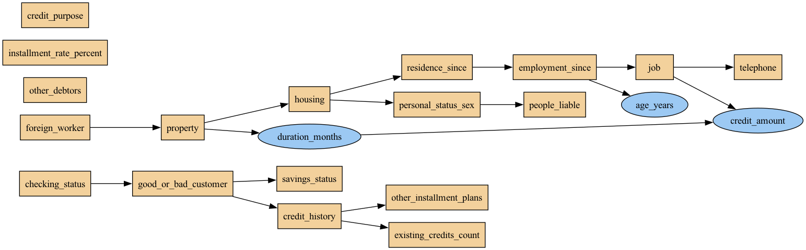
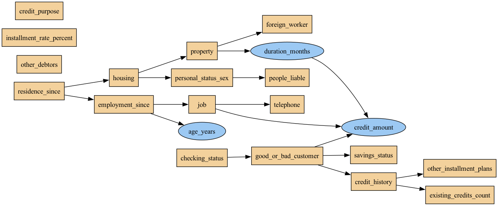
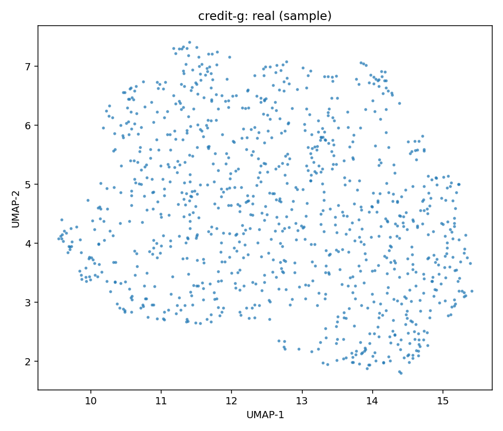
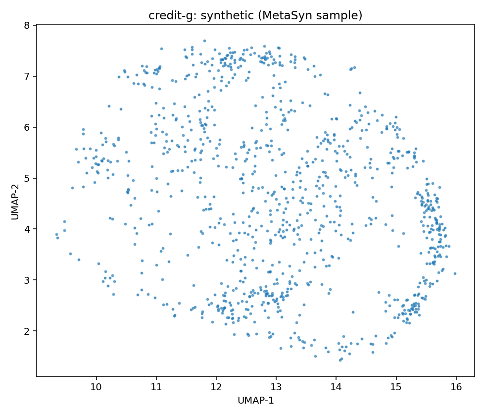
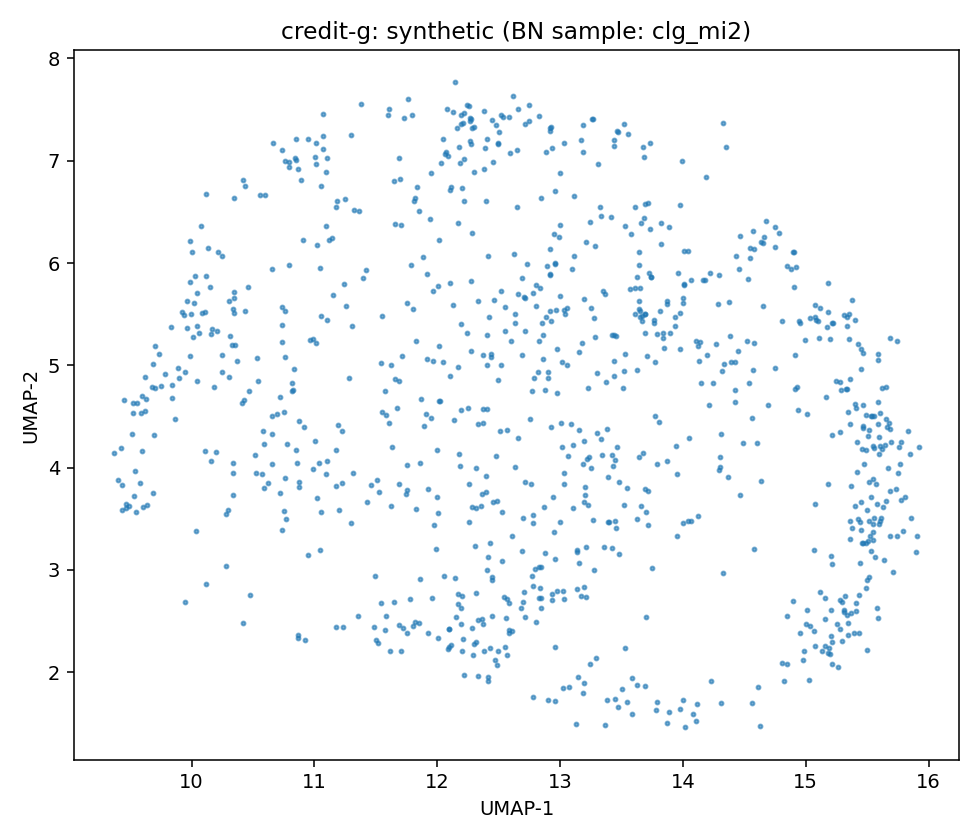
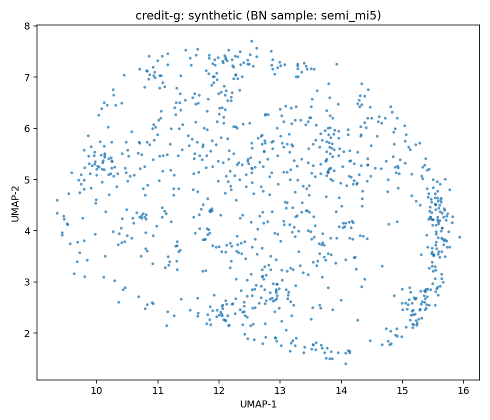

Source: OpenML dataset 46918
This dataset was curated for TabArena by the TabArena team as part of the TabArena Tabular ML IID Study. For more details on the study, see our paper.
Dataset Focus: This dataset shall be used for evaluating predictive machine learning models for independent and identically distributed tabular data. The intended task is classification.
Anomaly: the original task used a cost matrix for evaluation.
Creators: See original data source.
| variable | inferred | count | unique | top | freq | mean | std | min | 25% | 50% | 75% | max |
|---|---|---|---|---|---|---|---|---|---|---|---|---|
| checking_status | discrete | 1000 | 4 | no checking account | 394 | |||||||
| duration_months | continuous | 1000 | 20.903 | 12.058814452756378 | 4.0 | 12.0 | 18.0 | 24.0 | 72.0 | |||
| credit_history | discrete | 1000 | 5 | existing credits paid duly till now | 530 | |||||||
| credit_purpose | discrete | 1000 | 10 | radio/television | 280 | |||||||
| credit_amount | continuous | 1000 | 3271.258 | 2822.736875960441 | 250.0 | 1365.5 | 2319.5 | 3972.25 | 18424.0 | |||
| savings_status | discrete | 1000 | 5 | < 100 DM | 603 | |||||||
| employment_since | discrete | 1000 | 5 | 1 <= ... < 4 years | 339 | |||||||
| installment_rate_percent | discrete | 1000 | 4 | 4 | 476 | |||||||
| personal_status_sex | discrete | 1000 | 4 | male: single | 548 | |||||||
| other_debtors | discrete | 1000 | 3 | none | 907 | |||||||
| residence_since | discrete | 1000 | 4 | 4 | 413 | |||||||
| property | discrete | 1000 | 4 | car or other (not savings) | 332 | |||||||
| age_years | continuous | 1000 | 35.546 | 11.375468574317505 | 19.0 | 27.0 | 33.0 | 42.0 | 75.0 | |||
| other_installment_plans | discrete | 1000 | 3 | none | 814 | |||||||
| housing | discrete | 1000 | 3 | own | 713 | |||||||
| existing_credits_count | discrete | 1000 | 4 | 1 | 633 | |||||||
| job | discrete | 1000 | 4 | skilled employee / official | 630 | |||||||
| people_liable | discrete | 1000 | 2 | 1 | 845 | |||||||
| telephone | discrete | 1000 | 2 | none | 596 | |||||||
| foreign_worker | discrete | 1000 | 2 | yes | 963 | |||||||
| good_or_bad_customer | discrete | 1000 | 2 | good | 700 |
MetaSyn GMF: metasyn_gmf.json
| param | value |
|---|---|
| bn_type | clg |
| score | bic |
| operators | ['arcs'] |
| max_indegree | 2 |
| seed | 42 |

Serialization
| param | value |
|---|---|
| bn_type | semiparametric |
| score | bic |
| operators | ['arcs'] |
| max_indegree | 5 |
| seed | 42 |

Serialization
| model | mean_loglik | std_loglik | sum_loglik | disc_jsd_mean | disc_jsd_median | cont_ks_mean | cont_w1_mean |
|---|---|---|---|---|---|---|---|
| BN:clg_mi2 | -33.3695 | 4.5068 | -6507.0569 | 0.0575 | 0.055 | 0.1467 | 280.426 |
| BN:semi_mi5 | -34.0024 | 11.9792 | -6630.4653 | 0.0487 | 0.0474 | 0.1333 | 275.397 |
| MetaSyn | 0.0517 | 0.0545 | 0.0917 | 118.862 |
| JSD | KS | W1 | ||||||||
|---|---|---|---|---|---|---|---|---|---|---|
| variable | type | clg_mi2 | semi_mi5 | MetaSyn | clg_mi2 | semi_mi5 | MetaSyn | clg_mi2 | semi_mi5 | MetaSyn |
| age_years | continuous | 0.1096 | 0.0938 | 0.0934 | ||||||
| checking_status | discrete | 0.130 | 0.102 | 0.144 | 2.3982 | 2.2424 | 1.9838 | |||
| credit_amount | continuous | 0.0763 | 0.0780 | 0.0548 | ||||||
| credit_history | discrete | 0.1162 | 0.0939 | 0.1040 | ||||||
| credit_purpose | discrete | 0.165 | 0.161 | 0.055 | 836.7660 | 821.6475 | 352.9769 | |||
| duration_months | continuous | 0.0798 | 0.0792 | 0.0779 | ||||||
| employment_since | discrete | 0.0743 | 0.0416 | 0.0670 | ||||||
| existing_credits_count | discrete | 0.0396 | 0.0254 | 0.0542 | ||||||
| foreign_worker | discrete | 0.0474 | 0.0618 | 0.0500 | ||||||
| good_or_bad_customer | discrete | 0.0556 | 0.0444 | 0.0680 | ||||||
| housing | discrete | 0.0455 | 0.0579 | 0.0574 | ||||||
| installment_rate_percent | discrete | 0.0593 | 0.0405 | 0.0335 | ||||||
| job | discrete | 0.145 | 0.137 | 0.076 | 2.1151 | 2.3000 | 1.6250 | |||
| other_debtors | discrete | 0.0543 | 0.0581 | 0.0564 | ||||||
| other_installment_plans | discrete | 0.0378 | 0.0113 | 0.0245 | ||||||
| people_liable | discrete | 0.0664 | 0.0783 | 0.0904 | ||||||
| personal_status_sex | discrete | 0.0431 | 0.0340 | 0.0253 | ||||||
| property | discrete | 0.0215 | 0.0012 | 0.0226 | ||||||
| residence_since | discrete | 0.0096 | 0.0233 | 0.0052 | ||||||
| savings_status | discrete | 0.0288 | 0.0041 | 0.0171 | ||||||
| telephone | discrete | 0.0704 | 0.0504 | 0.0290 | ||||||
| Real (sample) | MetaSyn (synthetic) | BN: clg_mi2 | BN: semi_mi5 |
|---|---|---|---|
|  |  |  |  |